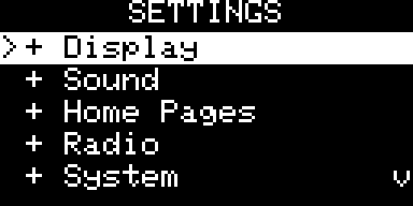
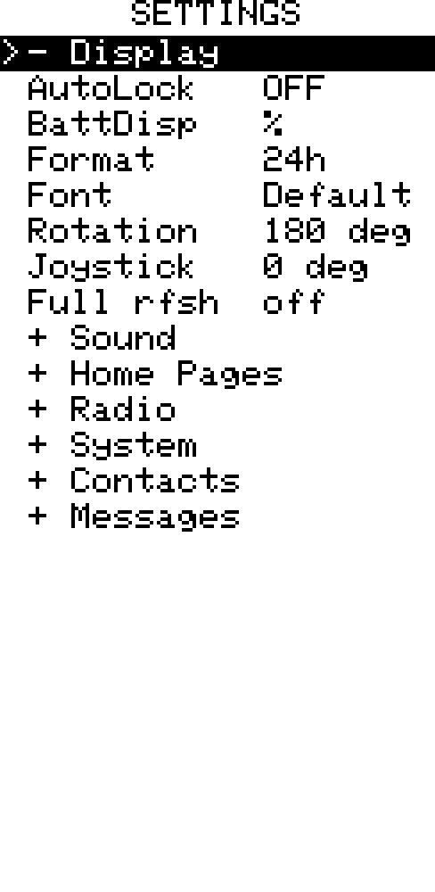
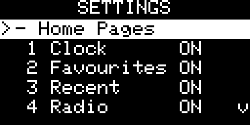
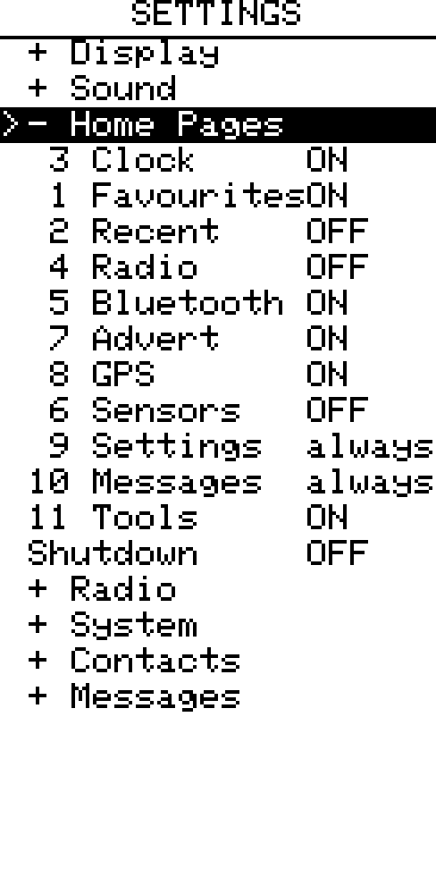

Settings screen
Settings Screen
Overview
| OLED | E-Ink |
|---|---|
 |
 |
All settings are saved to flash and restored on next boot. Settings are organised into collapsible sections. Press Enter on a section header to expand or collapse it — all sections start collapsed for faster navigation. Press LEFT/RIGHT to change a value, or Enter for toggle items.
Press Cancel/Back to save and return to the home screen.
Display
| Setting | Options | Notes |
|---|---|---|
| Brightness | 1–5 | LEFT/RIGHT; preview applies immediately |
| Auto-off | 5 s / 15 s / 30 s / 60 s / never | LEFT/RIGHT |
| Auto-lock | on / off | Locks device when display turns off |
| Battery | icon / % / V | Display mode for the top-bar battery indicator |
| Clock seconds | show / hide | Hiding reduces OLED refresh from 1 s to 60 s |
| Clock format | 24 h / 12 h | 12 h appends AM/PM |
| Font | Default / Lemon | Default: 5×7 Adafruit with ASCII transliteration; Lemon: native Unicode with pixel-accurate line wrap |
| Display rotation (e-ink only) | 0° / 90° / 180° / 270° | Applied immediately |
| Joystick rotation (e-ink only) | 0° / 90° / 180° / 270° | Rotates input mapping independently of display rotation; useful for custom enclosures |
| Full refresh interval (e-ink only) | off / 5 / 10 / 20 / 30 | Partial refreshes between full clears; reduces ghosting on long sessions |
Sound
| Setting | Options | Notes |
|---|---|---|
| Buzzer | On / Off / Auto | Auto: silences while BLE connected, re-enables on disconnect |
| Volume | 1–5 | LEFT/RIGHT; preview tone plays on each change |
| DM Melody | built-in / Melody 1 / Melody 2 / None | Notification sound for incoming private messages. None disables the sound for this event. |
| Channel Melody | built-in / Melody 1 / Melody 2 / None | Notification sound for incoming channel messages. None disables the sound for this event. |
| AD sound | built-in / Melody 1 / Melody 2 / None | Sound played whenever an advert is received from any node — pairs with Auto-Advert as an audible "in range" heartbeat (see Tools › Auto-Advert). None disables the sound for this event. |
| AD scope | All / Zero-hop | Filters the AD sound so it plays for every advert or only for local zero-hop adverts. |
Melody 1 and Melody 2 are custom sequences editable in Tools › Ringtone Editor.
Home Pages
| OLED | E-Ink |
|---|---|
 |
 |
Lists all available home screen pages. For each entry:
- LEFT / RIGHT — move the page earlier or later in the navigation sequence
- Enter — toggle the page ON / OFF
Settings and Messages are always visible and cannot be disabled.
Radio
| Setting | Options | Notes |
|---|---|---|
| TX power | 2–22 dBm | LEFT/RIGHT. With Auto pwr on this is the ceiling — the radio may transmit lower. |
| Pwr save | ON / OFF | Battery saver. Hardware duty-cycle receive: the SX126x cycles RX↔sleep on its own and wakes on a preamble, cutting average RX current. Trades a little receive latency; leave OFF for lowest-latency reception. Requires an SX126x radio (otherwise stays on continuous RX). |
| Auto pwr | ON / OFF | Adaptive Power Control. Lowers actual TX power on strong links to save energy, ramping back up — to the TX power ceiling — on weak or lost links. Link quality comes from direct-message ACK SNR and, for channel messages (no ACK), from hearing a repeater rebroadcast your packet. The radio page / name bar shows the live power. Default OFF (fixed TX power). |
System
| Setting | Options | Notes |
|---|---|---|
| Timezone | −12 h … +14 h | UTC offset in whole hours |
| Low battery | off / 3.0 V / 3.1 V / 3.2 V / 3.3 V / 3.4 V / 3.5 V | Auto-shutdown threshold; also sets the 0 % anchor for the battery percentage indicator |
| Units | Metric / Imperial | Global unit system for every distance/speed shown in Tools (Nearby Nodes, Trail, navigate-to-point). Metric: m / km, km/h, min/km. Imperial: ft / mi, mph, min/mi |
Contacts
| Setting | Options | Notes |
|---|---|---|
| DMs | all / favourites | Show all chat contacts or only upstream-starred ones |
| Channels | all / favourites | Show all channels or only favourited ones |
| Rooms | all / favourites | Show all room servers or only favourited ones |
Messages
Up to 10 quick reply templates (Q1–Q10). Press Enter on a slot to open the keyboard editor. Supports the same placeholders as the main keyboard ({time}, {loc}, and sensor placeholders when connected).